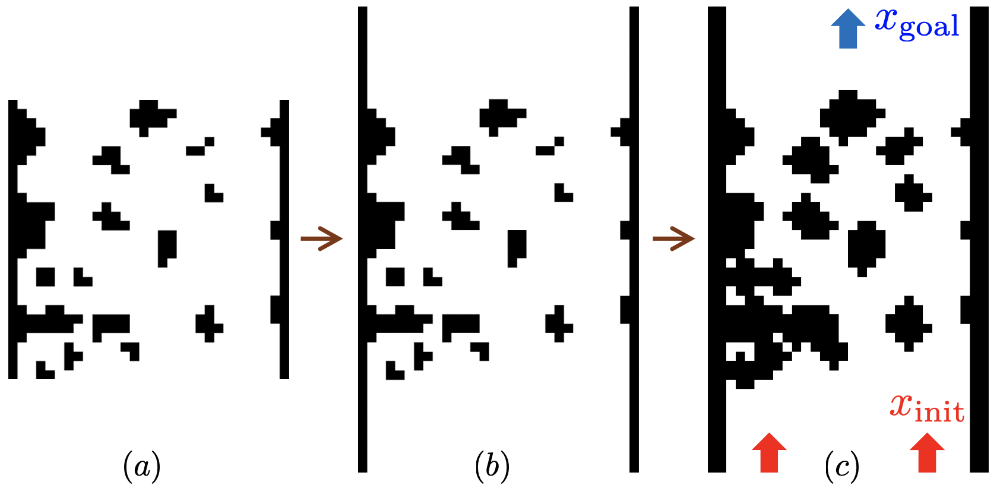

Abstract
This paper presents Bidirectional Clustering Model Predictive Path Integral (BiC-MPPI), a sampling-based kinodynamic trajectory optimizer for long-horizon goal-reaching tasks in cluttered environments. BiC-MPPI retains multiple clustered forward branches from the current state and reverse-time heuristic branches from the goal, associates forward and backward branch representatives, and uses the resulting connections as references for Guide MPPI refinement under forward dynamics. The backward branches are used only as goal-side heuristic references and are not directly executed. In 600 modified BARN navigation trials, BiC-MPPI achieved a 97.3\% success rate, compared with 47.7--54.2\% for the evaluated unidirectional baselines. In 240 simulated 6-DOF manipulator tasks, the best BiC-MPPI configuration achieved a 41.7\% success rate, compared with 10.0--22.5\% for the evaluated baselines. These improvements come with additional backward rollouts, clustering, branch association, and Guide MPPI refinement; accordingly, we report a stage-wise runtime breakdown to characterize the reliability--computation trade-off.
Method
Bidirectional Branch Generation
Generate forward cost-to-come rollouts from the current state and heuristic reverse-time cost-to-go rollouts from the goal; cluster each set and retain multiple representatives.
Branch Association
Associate forward and backward representatives using the connection metric, trim each pair at its closest states, and concatenate the retained segments into a guide candidate.
Guide MPPI Refinement
Refine each guide candidate with forward Guide MPPI rollouts from the current state, then apply the first control from the lowest-cost dynamically consistent trajectory.
The backward branches are heuristic goal-side references, not executable reverse-time trajectories. Guide MPPI regenerates forward-dynamically consistent controls from the current state.
Results
Modified BARN Navigation
97.3%
584 successes over 600 trials with BiC-MPPI (K-means), versus 47.7–54.2% for the evaluated unidirectional baselines.
6-DOF Manipulator Planning
41.7%
100 successful tasks out of 240 under the full success criterion with BiC-MPPI (K-means), versus 10.0–22.5% for the evaluated baselines.
Modified BARN Ground-Vehicle Navigation
Results on 300 modified BARN maps with two start states per map (600 trials). A trial succeeds within 200 replanning iterations when its position error falls below 0.1 m.
| Method | Successes ↑ | Success rate [-] ↑ | Failures ↓ | Collisions ↓ | Iterations ↓ | Total [s] ↓ | Rollout [s] | Clustering [s] | Connection [s] | Guide [s] |
|---|---|---|---|---|---|---|---|---|---|---|
| MPPI | 325 | 0.542 | 275 | 18 | 106.0 [98.0, 113.0] | 0.244 [0.226, 0.260] | 0.244 [0.226, 0.260] | — | — | — |
| Log-MPPI | 286 | 0.477 | 314 | 8 | 106.0 [97.2, 114.0] | 0.202 [0.186, 0.217] | 0.202 [0.186, 0.217] | — | — | — |
| Cluster-MPPI (DBSCAN) | 313 | 0.522 | 287 | 18 | 104.0 [96.0, 112.0] | 1.435 [1.303, 1.619] | 0.161 [0.148, 0.174] | 1.273 [1.155, 1.445] | — | — |
| Cluster-MPPI (K-means) | 287 | 0.478 | 313 | 13 | 105.0 [97.0, 113.0] | 1.851 [1.678, 2.037] | 0.112 [0.105, 0.121] | 1.740 [1.573, 1.915] | — | — |
| BiC-MPPI (DBSCAN) Ours | 537 | 0.895 | 63 | 47 | 96.0 [88.0, 104.0] | 2.362 [1.890, 3.413] | 0.190 [0.174, 0.210] | 1.966 [1.530, 3.022] | 0.002 [0.001, 0.002] | 0.183 [0.167, 0.202] |
| BiC-MPPI (K-means) Ours | 584 | 0.973 | 16 | 10 | 82.0 [77.0, 89.0] | 3.017 [2.738, 3.264] | 0.091 [0.086, 0.099] | 2.342 [2.104, 2.565] | 0.022 [0.021, 0.024] | 0.549 [0.504, 0.600] |
Iteration and timing entries are median [Q1, Q3] over successful trials; — denotes not applicable. Stage-wise medians need not sum to the total median.
6-DOF Manipulator Planning
Results from 16 reference postures and all ordered non-self start–goal pairs (240 tasks). Overall success requires the strict goal criterion and collision-free execution.
| Method | Successes ↑ | Overall SR [-] ↑ | Strict goal [-] ↑ | EE + velocity [-] ↑ | Collision-free [-] ↑ | Iterations [steps] ↓ | Wall time [s] ↓ |
|---|---|---|---|---|---|---|---|
| MPPI | 50 | 0.208 | 0.250 | 0.379 | 0.708 | 135.0 | 3.821 |
| Log-MPPI | 53 | 0.221 | 0.254 | 0.375 | 0.721 | 134.5 | 3.805 |
| Cluster-MPPI (K-means) | 24 | 0.100 | 0.113 | 0.192 | 0.721 | 141.8 | 5.817 |
| Cluster-MPPI (DBSCAN) | 54 | 0.225 | 0.258 | 0.383 | 0.721 | 134.8 | 5.617 |
| BiC-MPPI (K-means) Ours | 100 | 0.417 | 0.471 | 0.546 | 0.738 | 92.1 | 11.599 |
| BiC-MPPI (DBSCAN) Ours | 96 | 0.400 | 0.467 | 0.529 | 0.733 | 85.5 | 4.554 |
Strict goal: joint error < 0.03 rad, end-effector error < 0.05 m, and joint-velocity norm < 0.2 rad/s. EE + velocity omits the joint-error criterion. Iteration counts and wall times are means over successful tasks only.
Interpretation and Scope
- Retaining branches from both directions introduces goal-side structure that is absent from the evaluated forward-only baselines.
- Forward Guide MPPI regenerates connected branch candidates as dynamically consistent control sequences from the current state.
- In the reported configurations, higher success rates come with additional clustering, connection, and Guide MPPI computation; the comparisons are not total-computation matched.
- The reported results are from static simulated environments. BiC-MPPI has no claimed completeness or formal optimality guarantee, and real-time hardware validation remains future work.
Simulation Experiments
All four animations show modified BARN map 285. The clustering-based planners use DBSCAN. The robot starts at the bottom of the map, and the star marks the goal.

6-DOF Manipulator Planning
Appendix: Additional Ground-Vehicle Planning Experiments
Additional analyses using the same 600-trial modified BARN wheeled-mobile-robot benchmark and success criterion as the corresponding WMRobot experiments.
A. Sampling-Budget Scaling
Performance as the rollout-sampling budget increases from 1,000 to 6,000 samples.
| Method | Budget | Success rate [-] ↑ | 95% CI [-] | Failures ↓ | Iterations [steps] ↓ | Total time [s] ↓ |
|---|---|---|---|---|---|---|
| MPPI | B1000 | 0.375 | [0.337, 0.414] | 375 | 156.6 | 0.077 |
| Cluster-MPPI | B1000 | 0.398 | [0.360, 0.438] | 361 | 145.5 | 0.245 |
| Full BiC-MPPI Full | B1000 | 0.835 | [0.807, 0.863] | 99 | 97.6 | 0.608 |
| MPPI | B3000 | 0.428 | [0.389, 0.468] | 343 | 155.2 | 0.103 |
| Cluster-MPPI | B3000 | 0.515 | [0.475, 0.555] | 291 | 145.6 | 1.654 |
| Full BiC-MPPI Full | B3000 | 0.868 | [0.820, 0.880] | 79 | 95.3 | 1.552 |
| MPPI | B6000 | 0.542 | [0.483, 0.563] | 275 | 144.3 | 0.330 |
| Cluster-MPPI | B6000 | 0.522 | [0.490, 0.570] | 287 | 145.2 | 2.085 |
| Full BiC-MPPI Full | B6000 | 0.895 | [0.870, 0.902] | 63 | 94.6 | 2.540 |
Full BiC-MPPI maintained the highest success rate at every tested sampling budget. Increasing the budget improved its success rate from 0.835 at B1000 to 0.895 at B6000, with the expected increase in solver time.
B denotes the number of rollout samples. Iteration counts and times are means over successful trials.
B. Component Ablation
All rows use the same maps, start states, parameter setting, seed policy, collision checker, and success criterion.
| Method | Success rate [-] ↑ | Failures ↓ | Iterations [steps] ↓ | Time [s] ↓ |
|---|---|---|---|---|
| MPPI | 0.542 | 275 | 106.2 | 0.244 |
| Cluster-MPPI | 0.522 | 287 | 104.7 | 1.495 |
| BiC-MPPI without clustering | 0.927 | 44 | 98.0 | 0.415 |
| BiC-MPPI without Guide MPPI | 0.882 | 71 | 84.0 | 3.544 |
| Full BiC-MPPI Full | 0.973 | 16 | 83.8 | 3.017 |
Full BiC-MPPI with K-means achieved the highest success rate, 0.973, in this controlled ablation. Removing clustering reduced the success rate to 0.927, while removing Guide MPPI reduced it to 0.882.
BiC-MPPI without Guide MPPI retains the forward–backward branch-connection stage but skips Guide MPPI refinement, selecting the connected trajectory with the lowest trajectory cost instead. BiC-MPPI without clustering replaces clustered branch representatives with the 8 lowest-cost rollouts from each direction, treating each selected rollout as an individual branch representative.
Rates are fractions. Iteration counts and times are means over successful trials. Cluster-MPPI uses DBSCAN, and Full BiC-MPPI uses K-means.
Website-only supplementary experiment · Not reported in the paper
Waypoint-Assisted Use Case
Each scenario concatenates five modified BARN maps for the wheeled-mobile-robot setup. The goal at the end of each constituent map becomes the next target waypoint, yielding five target waypoints after the initial state. All planners receive the same ordered sequence.
The supplementary BiC-MPPI extension uses the remaining waypoint segments as references. For each segment, forward and heuristic backward samples are evaluated in GPU-parallel rollout batches; the connected segment references are then concatenated and refined by a global Guide MPPI pass. In contrast, MPPI, Log-MPPI, and Cluster-MPPI track one target waypoint at a time and advance only after reaching the current target. In the reported 10-scenario run, none of these three sequential configurations reached the final goal, whereas the supplementary BiC-MPPI extension succeeded in 6 scenarios.

Scenario 00: Waypoint-Guided Path Evolution
| Method | Scenarios | Success rate [%] ↑ | Mean solver time [s] ↓ |
|---|---|---|---|
| MPPI | 10 | 0 | 0.180 |
| Log-MPPI | 10 | 0 | 0.229 |
| Cluster-MPPI | 10 | 0 | 1.504 |
| BiC-MPPI Ours | 10 | 60 | 9.279 |
These supplementary results illustrate how BiC-MPPI can use coarse waypoint guidance to connect locally generated trajectory segments across a longer environment. Under the tested configurations, this capability required more computation than the sequential variants.
Success requires collision-free completion within 0.45 m of the final goal. Mean solver time is accumulated over each scenario and averaged across all 10 scenarios, including failures. These results are not part of the paper benchmark.
Citation
Please cite the arXiv preprint using the BibTeX entry below.
arXiv Preprint (2024)
@article{jung2024bicmppi,
title = {BiC-MPPI: Goal-Pursuing, Sampling-Based Bidirectional Rollout Clustering Path Integral for Trajectory Optimization},
author = {Jung, Minchan and Kim, Kwangki},
year = {2024},
journal = {arXiv preprint arXiv:2410.06493},
eprint = {2410.06493},
archivePrefix = {arXiv},
primaryClass = {cs.RO},
doi = {10.48550/arXiv.2410.06493},
url = {https://arxiv.org/abs/2410.06493}
}See the public arXiv record.